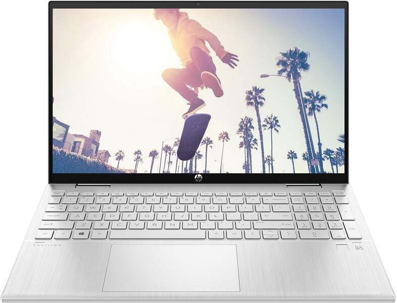
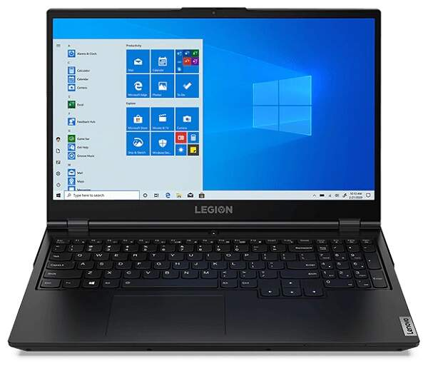

Kompaktný notebook obsahuje prvý čip vyrobený na mieru prístrojom spoločnosti Apple. Výkon, grafika, rýchlosť a výdrž batérie majú v porovnaní s predchádzajúcim modelom ešte lepšie hodnoty a navyše Macbook Air 2020 pracuje bez jediného vetráčika. Retina displej s minimálnymi rámčekmi vás uchváti kvalitou obrazu, širokým spektrom farieb a perfektnou čitateľnosťou textu. Na klávesnici sa pracuje pohodlne aj v tme a vďaka špeciálnej úprave je ešte o niečo tichší. Nechýba obľúbený všestranný port Thunderbolt, WiFi 6 ani špičkové zabezpečenie odtlačkom prsta.
Kľúčové vlastnosti:
Uhlopriečka 13.3 "
Rozlíšenie displeja (px) 2560x1600
Rozlíšenie displeja QHD
Operačná pamäť RAM 8 GB
Kapacita disku 256 GB
Kapacita SSD 256 GB
Wi-Fi štandardy 802.11ax (WiFi 6)
Počet USB-C (3.0/3.1/3.2) 2
Zobrazovacia technológia IPS
Poskytovaný OS Mac OS
3100€
HP PAVILION X360 15-ER0800NC (45Z02EA)

Popis
Konvertibilný notebook HP Pavilion x360 15-er0800nc v striebornom vyhotovení môžete využívať v 4 režimoch. Zobrazenie obsahu vo Full HD rozlíšení 1920 x 1080px zabezpečuje dotykový IPS displej so 15,6-palcovou uhlopriečkou.
Kľúčové vlastnosti:
Uhlopriečka 15.6 "
Rozlíšenie displeja (px) 1920x1080
Rozlíšenie displeja FHD
Operačná pamäť RAM 8 GB
Kapacita disku 512 GB
Kapacita SSD 512 GB
Wi-Fi štandardy 802.11ax (WiFi 6)
Počet USB-C (3.0/3.1/3.2) 3
Zobrazovacia technológia IPS
Poskytovaný OS Windows 10 Home
1500€
ASUS VIVOBOOK 14 M413DA-EB460T
Popis
Asus Vivobook 14 predstavuje zhmotnenie notebooku, ktorý bude s vami stále schopný udržať krok. Dokonale spracované telo a množstvo inovatívnych funkcii z neho spraví vášho obľúbeného spoločníka, ktorého využijete pri vašej každodennej práci ale i zábave.
Kľúčové vlastnosti:
Uhlopriečka 14 "
Rozlíšenie displeja (px) 1920x1080
Rozlíšenie displeja FHD
Operačná pamäť RAM 4 GB
Kapacita disku 256 GB
Kapacita SSD 256 GB
Wi-Fi štandardy 802.11ac
Počet USB-C (3.0/3.1/3.2) 1
Zobrazovacia technológia IPS
Poskytovaný OS Windows 10 Home
1000€
LENOVO LEGION 5 15ACH6H (82JU009BCK)

Popis
Herný notebook Lenovo Legion 5 15ACH6H (82JU009BCK) v čiernom prevedení je vhodný pre všetkých herných nadšencov. 15,6“ IPS displeju s Full HD rozlíšením 1920 x 1080 pixelov, obnovovacou frekvenciou 120 Hz a svietivosťou 250 nitov asistuje 6-jadrový procesor AMD Ryzen 5 5600H so základnou frekvenciou 3,3 GHz (TB 4,2 GHz), 16 GB DDR4 operačná pamäť RAM a samostatná grafická karta NVIDIA GeForce RTX 3060 s grafickou pamäťou 6 GB.